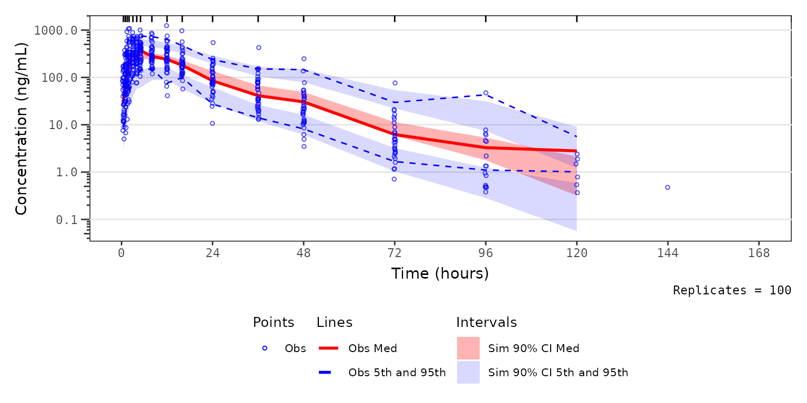

This vignette will review the functionality for updating aesthetic
elements of VPC plots generated using vpc() with the
new_vpc_theme() function from the vpc
package.
plot_legend() is a helper plotting function that creates
a legend for plots generated using vpc(). These legends can
then be merged with the VPC plot into a single plot object using the
patchwork package.
Let’s get started. First, we will load the required packages.
options(scipen = 999, rmarkdown.html_vignette.check_title = FALSE)
library(pmxhelpr)
library(dplyr, warn.conflicts = FALSE)
library(ggplot2, warn.conflicts = FALSE)
library(vpc, warn.conflicts = FALSE)
library(mrgsolve, warn.conflicts = FALSE)
library(withr, warn.conflicts = FALSE)
library(patchwork, warn.conflicts = FALSE)Next, let’s load use the internal data and model objects from
pmxhelpr and df_mrgsim_replicate to run the
simulation.
data <- data_sad
model <- model_mread_load("model")
#> Building model_cpp ... done.
simout <- df_mrgsim_replicate(data = data, model = model,replicates = 100,
time_vars = c(TIME = "TIME", NTIME = "NTIME"),
output_vars = c(PRED = "PRED", IPRED = "IPRED", DV = "ODV"),
num_vars = c("CMT", "BLQ", "LLOQ", "EVID", "MDV", "DOSE", "FOOD"),
char_vars = c("PART"),
obsonly = TRUE)Now let’s plot all data together in a prediction-corrected VPC
(pcVPC). There is only single dose administration in this dataset, thus
we are able to pool across doses and food conditions with
prediction-correction. We will set min_bin_count = 5 to
avoid the simulated intervals extending to the final timepoint with only
a single observation.
vpc_pc <- plot_vpc_exactbins(
sim = simout,
time_vars = c(TIME = "TIME", NTIME = "NTIME"),
output_vars = c(PRED = "PRED", IPRED = "IPRED", SIMDV = "SIMDV", OBSDV = "OBSDV"),
log_y = TRUE,
xlab = "Time (hours)",
ylab = "Concentration (ng/mL)",
pcvpc = TRUE,
min_bin_count = 5
)
#> Joining with `by = join_by(NTIME)`
#> Joining with `by = join_by(NTIME)`
vpc_pcThe default elements shown in the plot are inherited from
vpc(). The shown argument can be provided to
plot_vpc_exactbins() and passed on to the show
argument of vpc().
The options are as follows:
shown_list <- list(obs_dv = TRUE, obs_ci = TRUE,
pi = FALSE, pi_as_area = FALSE, pi_ci = TRUE,
obs_median = TRUE, sim_median =FALSE, sim_median_ci = TRUE)
print(shown_list)
#> $obs_dv
#> [1] TRUE
#>
#> $obs_ci
#> [1] TRUE
#>
#> $pi
#> [1] FALSE
#>
#> $pi_as_area
#> [1] FALSE
#>
#> $pi_ci
#> [1] TRUE
#>
#> $obs_median
#> [1] TRUE
#>
#> $sim_median
#> [1] FALSE
#>
#> $sim_median_ci
#> [1] TRUESimilarly, the default aesthetics for this plot are inherited from
the defaults in the vpc package, which can be viewed by
running new_vpc_theme() with no arguments.
vpc_theme_list <- new_vpc_theme()
print(vpc_theme_list)
#> $obs_color
#> [1] "#000000"
#>
#> $obs_size
#> [1] 1
#>
#> $obs_median_color
#> [1] "#000000"
#>
#> $obs_median_linetype
#> [1] "solid"
#>
#> $obs_median_size
#> [1] 1
#>
#> $obs_alpha
#> [1] 0.7
#>
#> $obs_shape
#> [1] 1
#>
#> $obs_ci_color
#> [1] "#000000"
#>
#> $obs_ci_linetype
#> [1] "dashed"
#>
#> $obs_ci_fill
#> [1] "#80808033"
#>
#> $obs_ci_size
#> [1] 0.5
#>
#> $sim_pi_fill
#> [1] "#3388cc"
#>
#> $sim_pi_alpha
#> [1] 0.15
#>
#> $sim_pi_color
#> [1] "#000000"
#>
#> $sim_pi_linetype
#> [1] "dotted"
#>
#> $sim_pi_size
#> [1] 1
#>
#> $sim_median_fill
#> [1] "#3388cc"
#>
#> $sim_median_alpha
#> [1] 0.3
#>
#> $sim_median_color
#> [1] "#000000"
#>
#> $sim_median_linetype
#> [1] "dashed"
#>
#> $sim_median_size
#> [1] 1
#>
#> $bin_separators_color
#> [1] "#000000"
#>
#> $loq_color
#> [1] "#990000"
#>
#> attr(,"class")
#> [1] "vpc_theme"Now, suppose we want to change the default aesthetics of the VPC
plot. This can be accomplished by passing a named list of elements to
update to the function new_vpc_theme(). The named list
object generated from this function can then be passed to the
theme argument in vpc_plot_exactbins, which is
also an alias for the vpc_theme argument in
vpc().
Let’s say we prefer a more classical VPC color schema, based only on basic red-blue-green color brewer. We will make the following changes: - Observed points blue - Observed median and simulated 90% CI of the median red - Observed 5th and 95th and simulated 90% CI of the 5th and 95th blue
vpc_theme <- new_vpc_theme(
list(
obs_color = rgb(0,0,1),
obs_median_color = rgb(1,0,0),
obs_ci_color = rgb(0,0,1),
sim_median_fill = rgb(1,0,0),
sim_pi_fill = rgb(0,0,1)
)
)Now, let’s take a look at our plot prior plot with the new color schema.
vpc_pc_new <- plot_vpc_exactbins(
sim = simout,
time_vars = c(TIME = "TIME", NTIME = "NTIME"),
output_vars = c(PRED = "PRED", IPRED = "IPRED", SIMDV = "SIMDV", OBSDV = "OBSDV"),
log_y = TRUE,
xlab = "Time (hours)",
ylab = "Concentration (ng/mL)",
pcvpc = TRUE,
theme = vpc_theme,
min_bin_count = 5
)
#> Joining with `by = join_by(NTIME)`
#> Joining with `by = join_by(NTIME)`
vpc_pc_newThis is nice; however, I do not like the grey background and I would
prefer only major y-axis grid lines without any x-axis grid lines.
Conveniently, we can just add theme() elements on top of
the plot object using the standard ggplot2 approach.
vpc_pc_new2 <- plot_vpc_exactbins(
sim = simout,
time_vars = c(TIME = "TIME", NTIME = "NTIME"),
output_vars = c(PRED = "PRED", IPRED = "IPRED", SIMDV = "SIMDV", OBSDV = "OBSDV"),
log_y = TRUE,
xlab = "Time (hours)",
ylab = "Concentration (ng/mL)",
pcvpc = TRUE,
min_bin_count = 5,
theme = vpc_theme
) +
theme(panel.background = element_rect(fill = "white", linewidth = 0.5, color = "black"),
panel.grid.minor.y = element_blank(),
panel.grid.minor.x = element_blank(),
panel.grid.major.x = element_blank())
#> Joining with `by = join_by(NTIME)`
#> Joining with `by = join_by(NTIME)`
vpc_pc_new2
Okay, now we have gotten the plot aesthetics where we want them; however, there is one other element we may like to include in the figure to make it more easily interpreted in isolation - a legend.
pmxhelpr provides a useful helper function for this
purpose, plot_legend(). The arguments to
plot_legend() are as follows: - ci simulated
confidence interval plotted. Default is c(0.05, 0.95). - pi
prediction intervals plotted. Default is c(0.05, 0.95). -
lloq label for lower limit of quantification in the plot
legend. - update list containing the plot elements to be
updated. Default is set by vpc::new_vpc_theme(). -
shown Named list of logicals specifying which layers to
include on the plot.
To obtain a legend for a plot using default aesthetics, simply run plot_legend() without any arguments specified.
vpc_pc_legend <- plot_legend()
vpc_pc_legendNow we have a ggplot object legend for our first
plot!
To generate one for our second plot with updated aesthetics, let’s
pass the same named list object (vpc_theme) to the
update argument.
vpc_pc_new_legend <- plot_legend(update = vpc_theme)
vpc_pc_new_legendOkay, now that we have our legend plot objects, let’s combine them
with the VPC plot objects into a single plot object with the
patchwork package.
vpc_pc_wleg <- vpc_pc + vpc_pc_legend + plot_layout(heights = c(2.5,1))
vpc_pc_wleg
vpc_pc_new_wleg <- vpc_pc_new2 + vpc_pc_new_legend + plot_layout(heights = c(2.5,1))
vpc_pc_new_wleg